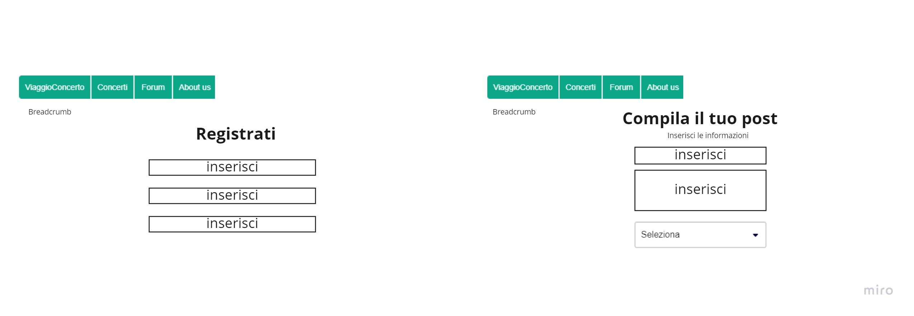

About Us
Il sito Viaggioconcerto nasce grazie ad un progetto per la materia di Informatica umanistica dell'università di Bologna.
L'obiettivo principale è quello di fare incontrare persone tramite un aspetto che da sempre fa parte della nostra vita: la musica.
Il sito presenta pagine fittizie,
create per far capire quella che era la mia idea iniziale delle possibili interazioni che si potrebbero effettuare al suo interno.
Documentazione
Abstract
Il sito si presenta con una grafica semplice ed uniforme, che vuole essere user friendly e adatta a tutti. Molte pagine presenti sono esempi fittizi
per dimostrare l’idea su cui volevo basare il progetto.
Project Management Plan
1. Benchmarking
Il target non comprende una fascia d’età specifica, indicativamente si potrebbe considerare quella che va dai 16 ai 30 anni circa.
I competitor sono:
Blablacar: si tratta dell’applicazione per eccellenza per organizzare dei viaggi in macchina con privati, che consiste nel “prenotare” passaggi a chi inserisce delle tratte. Ha lo stesso servizio ma con un obiettivo diverso e un target utente molto più ampio.
Eventinbus: è un sito che organizza dei viaggi di andata/ritorno per i concerti con tappe prefissate. In questo caso il servizio è con la stessa finalità, ma modalità diverse di organizzazione e relazione.
Busperegoexpress: è una via di mezzo tra i due precedenti, probabilmente un po’ meno conosciuto. Offre diversi servizi come tour in giornata, musical, shopping, soggiorni… oltre alle tratte per concerti. Quindi il target si amplifica ancora di più rispetto ai competitor precedenti, comprendendo ogni fascia di età e necessità.
2. Struttura e layout
Wireframe home
Wireframe concerto e pagina concerto
Wireframe forum e post forum
Wireframe Crea un profilo e crea un post
Wireframe pagina di errore
Wireframe About us
3. Linguaggi e strumenti
Gli strumenti sono:
- Sublimetext4 (per la scrittura in html e css)
- Bootstrap (per alcuni template)
- W3school (per cercare elementi e aspetti di html e css e scegliere i colori RGB)
- Fontawesome (per le icone)
- Googlefonts (per i font utilizzati)
- Canva (per l’immagine nella homepage)
- Miro (per le grafiche dello schema del sito e del wireframe)
- Google Analytics (per monitorare il sito)
- GitHub (per pubblicare il sito)
- Social (per pubblicizzare il sito)
Look and feel:
La grafica del sito è molto semplice e pulita. Le palette di colori riguardano principalmente i toni del verde.Nelle intestazioni principali ho utilizzato il font ‘permanent maker’ per evidenziare al meglio i titoli delle pagine,
mentre per quelle secondarie e per i paragrafi del sito ho utilizzato il font ‘arvo’ di modo che si potesse mantenere una certa linearità. La navbar presenta invece il font ‘domine’.
L’immagine utilizzata nell’homepage vuole richiamare l’itinerario che si percorre durante un viaggio.
Communication Strategy
1. Background
2. Obiettivi comunicativi
Per poter raggiungere tale fine innanzitutto è prevista una pubblicizzazione tramite social network e passaparola.
La semplicità del sito permette una fruizione adatta a tutti, mentre la possibilità di poter contattare chi ha intenzione di offrire un passaggio, permette di confrontarsi e capire le esigenze delle persone, rendendolo un metodo affidabile e flessibile.
3. Target audience e messaggio
la pubblicizzazione sui social e il passaparola che si innesca una volta che inizia a circolare la conoscenza della presenza del sito web.
Ciò non esclude che vi siano utenti casuali o over30 che per diversi motivi non possono raggiungere il luogo del concerto e necessitano di un passaggio.
Il raggiungimento del target potrebbe essere spinto da canali social, da recensioni/passaparola positivi,
da pubblicizzazioni di diversa natura e da collaborazioni tra enti operanti nell’ambito di organizzazione di eventi.
Un’eventuale barriera potrebbe essere la sfiducia delle persone verso il concetto su cui si basa il sito
e (al momento) l’impossibilità effettiva di interazione (essendo le pagine fittizie).
Il messaggio mira a far percepire la target audience il servizio che il sito vuole offrire, consentendo un maggiore engagement
e un meccanismo di passaparola e recensioni che possano dare visibilità e fiducia al progetto.
Sarebbe aspicabile che chi deve spostarsi per andare ad un concerto possa considerare Viaggioconcerto come
una valida alternativa ai mezzi pubblici/privati o ai viaggi organizzati in pullman.
4. Promozione
richiesta tramite messaggio di visitare il sito e passaparola "in live"